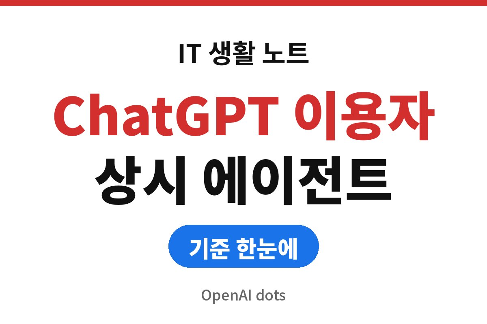
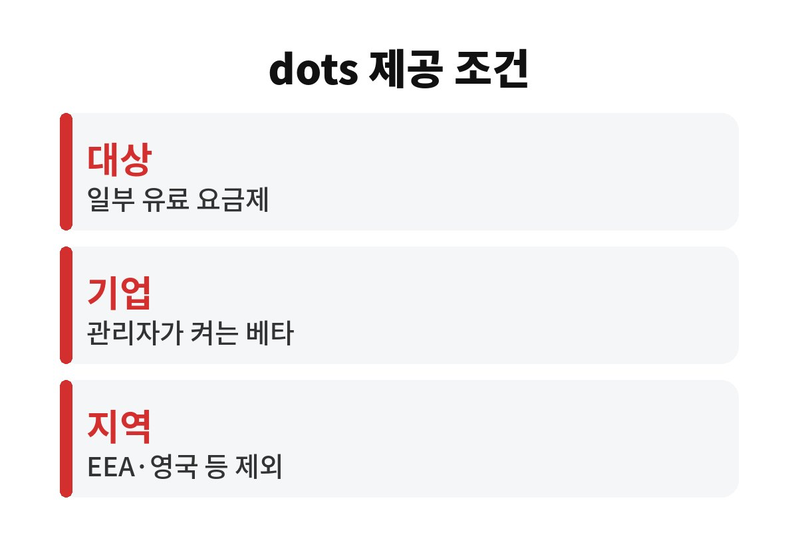
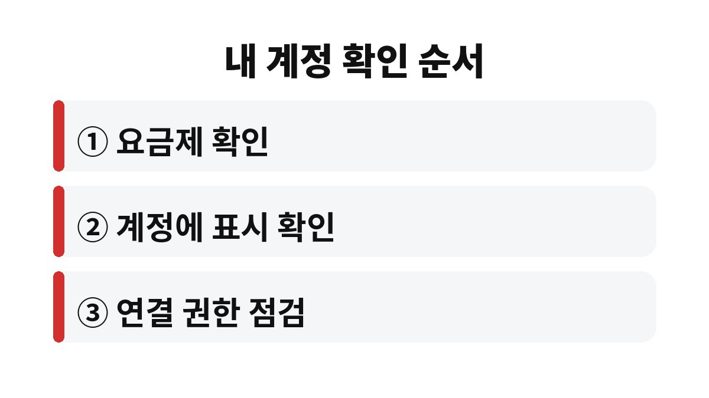

OpenAI dots는 ChatGPT 안에서 대화가 끝난 뒤에도 사용자가 정한 목표를 이어서 처리하는 상시 가동 에이전트다.
2026년 9월 29일 샌프란시스코 DevDay에서 공개됐고, 복수의 보도에 따르면 순차 배포 중이다.
기존 챗봇은 사용자가 질문하면 답하고 멈춘다.
dots는 목표를 맡겨 두면 대화가 끝난 뒤에도 작업을 이어 가는 방식으로 소개됐다.
기반 모델은 GPT-6 Astra로 보도됐다.
여러 프로젝트를 동시에 맡길 수 있다는 설명도 있다.
시간이 걸리는 조사나 반복 확인 같은 일에 맞춘 구조로 보이지만, 어떤 일을 얼마나 잘 처리하는지는 발표 자료만으로 판단하기 어렵다.
기대와 실제 사이의 거리는 직접 맡겨 보기 전에는 알 수 없다.
보도에 따르면 각 dot은 자기만의 클라우드 컴퓨터와 브라우저를 가진다.
플러그인으로 4,000개가 넘는 앱에 연결할 수 있다고 발표됐다.
다만 연결할 수 있다는 것과 모든 작업이 가능하다는 것은 다르다.
실제로 할 수 있는 일은 사용자가 준 권한과 연결한 앱에 따라 달라진다.
대화 채널은 ChatGPT 데스크톱·웹·모바일과 Slack, Microsoft Teams로 소개됐다.
전담 업무용 스페셜리스트 dots는 미리보기로만 공개됐고 세부 조건은 나오지 않았다.
| 구분 | 보도 내용 |
|---|---|
| 공개 | 2026년 9월 29일 DevDay 2026 |
| 포함 요금제 | Pro, Business Premium은 첫 dot 포함 |
| 기업 워크스페이스 | Enterprise·Edu·Healthcare는 관리자가 켜는 베타 |
| 이용 연령 | 만 18세 이상(한 보도 기준) |
| 제외 지역 | 유럽경제지역·스위스·영국 등(보도마다 표현이 다름) |
| 한국 제공 | 확인된 보도 없음 |

첫 달 이후의 사용량 조건은 요금제별로 추후 안내한다는 것이 한 보도의 설명이다.
별도 가격이 있는지, 두 번째 dot부터 추가 요금이 붙는지는 보도에 나오지 않는다.
내가 확인한 글은 모두 2차 보도여서, 가격과 한도는 OpenAI 공식 안내가 나올 때 다시 확인해야 한다.
사용량 한도는 보도마다 설명이 다르다.
한 보도는 출시 후 첫 한 달 동안 dots 사용량이 요금제 허용량에 잡히지 않는다고 하고, 다른 보도는 dot과의 대화가 ChatGPT 한도에 포함되지 않는다고 한다.
두 설명 모두 무료라고 단정하지는 않아서 계산을 미리 하지 않는 편이 낫다.
한국 이용자 입장에서는 제외 지역 목록에 한국이 없다는 사실만으로 제공된다고 받아들이면 곤란하다.
제공 지역을 밝힌 목록 자체가 보도에 없어서 포함 여부는 알 수 없다.
dots는 사용자가 함께 일하지 않는 동안 연결된 앱을 살피며 도울 일을 찾는다.
이때는 읽기 전용 도구만 쓰고 메시지 발송이나 앱 내용 변경은 하지 못한다고 한다.
한 초기 테스터의 사례에서는 빠진 청구서를 찾아 준비했지만 승인을 받은 뒤에야 보냈다.
비밀번호 변경 같은 민감한 작업은 사용자가 직접 이어받는 구조라는 설명도 있다.
예를 들어 외부 서비스에 연결한 계정이 많을수록 dot이 읽을 수 있는 범위도 넓어지므로 연결은 필요한 앱부터 하나씩 늘리는 쪽이 안전하다.
이런 한계는 기능이 아직 초기 단계라는 신호이므로, 중요한 작업을 처음부터 통째로 맡기기보다 결과를 눈으로 확인할 수 있는 일부터 시켜 보는 것이 낫다.
개인 컴퓨터 연결은 선택 사항이고 기본값은 꺼짐이다.
앱 연결을 끊어도 이미 가져온 정보가 자동으로 지워지지는 않는다고 한 보도는 전한다.
개별 기억을 따로 열람하거나 지울 수 없다는 점도 같은 보도에 있다.
발표 시점에 dot이 사용자에게 먼저 전화를 걸 수는 없고, dot 생성은 데스크톱 앱이나 데스크톱 웹에서만 된다.
문자 메시지 기능은 미국 Pro 이용자 대상 제한 베타다.
기업 워크스페이스에서는 구성원이 개별로 켤 수 없고 관리자가 켜야 하므로, 회사 계정으로 쓰려면 먼저 관리자 정책을 물어야 한다.
한국 제공 여부가 확인되지 않았으므로 발표 내용을 믿고 요금제부터 올리는 일은 서두르지 않는 편이 낫다.
순차 배포라서 같은 요금제라도 계정마다 메뉴가 나타나는 시점이 다를 수 있다.
메뉴가 보이지 않는다고 요금제나 설정이 잘못된 것은 아니다.
무료 체험처럼 보이는 조건이 있어도 첫 달이 지난 뒤의 요금제별 조건은 아직 공개되지 않았다는 점을 염두에 둔다.

※ 2026년 기준 공식 안내를 바탕으로 정리한 글이며, 기기·앱 버전에 따라 메뉴 이름이 다를 수 있다.